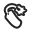

BANG!
BANG! es un juego de duelos entre un grupo de forajidos y su objetivo principal, el sheriff, al más puro estilo de los Spaghetti Westerns. Los alguaciles, de incógnito, ayudan al sheriff, pero entre todos ellos hay un renegado que persigue sus propios fines.En BANG! cada jugador interpreta alguno de estos roles y representa a un personaje inspirado en algún famoso del Salvaje Oeste.
OBJETIVO DEL JUEGO
Cada jugador tiene su propio objetivo, que depende del rol que desempeña:| El sheriff: | debe eliminar a todos los forajidos y al renegado, para proteger la ley y el orden. |
| Los forajidos: | quieren matar al sheriff, pero no tienen ningún escrúpulo a la hora de eliminarse entre ellos para conseguir la recompensa. |
| El renegado: | quiere ser el próximo sheriff, así que su objetivo es ser el último hombre en pie. |
| Los alguaciles: | ayudan y protegen al sheriff, y comparten su objetivo a cualquier coste. |
En una partida de 3 jugadores todos los roles son públicos y sus objetivos son los siguientes:
| El alguacil: | debe eliminar al renegado. |
| El renegado: | debe eliminar al forajido. |
| El forajido: | debe eliminar al alguacil. |
Personajes
Todos los personajes tienen capacidades especiales que los hacen únicos. Aquellos con capacidades más potentes de lo normal tienen 1 punto de vida menos. Además, la cantidad de puntos de vida corresponde al número máximo de cartas que puede tener un jugador en su mano al final de su turno. Las capacidades de los personajes no se utilizan en el modo Fácil.LA PARTIDA
El sheriff juega en primer lugar. La partida se desarrolla en turnos sucesivos, siguiendo la dirección de las agujas del reloj. El turno de cada jugador se divide en tres fases:- Roba cartas
- Juega cualquier número de cartas
- Descarta el exceso de cartas
Roba cartas
Roba las 2 primeras cartas del mazo de robo, a no ser que una capacidad o evento especial imponga condiciones especiales; por ejemplo DINAMITA y CÁRCEL deben resolverse primero.Juega cualquier número de cartas
Ahora puedes jugar cartas para beneficiarte o perjudicar a los demás jugadores intentando eliminarlos.No estás obligado a jugar cartas durante esta fase. Puedes jugar cualquier número de cartas, con solo estas tres limitaciones:
- Puedes jugar 1 única carta ¡BANG! por turno (a menos que tengas el arma VOLCANIC o una capacidad especial); esto solo se aplica a las cartas ¡BANG!, no a las que tengan el símbolo
 .
. - Solo puedes tener en juego delante de ti 1 copia de cualquier carta (o sea, que no puedes tener 2 BARRIL, 2 MUSTANG y demás).
- Solo puedes tener en juego 1 arma.
Algunas cartas se utilizan contra jugadores específicos y se juegan sobre dichos jugadores.
Otras afectan a todos los jugadores, o solo a ti, en cuyo caso se juegan en el centro de la mesa.
Las cartas marrones son instantáneas: se aplican sus efectos y se envían a la pila de descartes.
Las cartas azules son permanentes: se quedan "en juego" sobre la mesa delante del correspondiente jugador.
Las cartas verdes (disponibles únicamente con la expansión opcional "Dodge City") son semipermanentes: se juegan primero sobre la mesa, y después (tras el final del turno) pueden jugarse desde la mesa para ejercer un efecto instantáneo como las marrones.
Todas las cartas (incluidas las azules) pueden ser retiradas o robadas mediante otras cartas, como ¡PÁNICO! y LA INGENUA EXPLOSIVA.
Descarta el exceso de cartas
Antes de ceder el turno al siguiente jugador, debes descartar de tu mano todas las cartas que sobrepasen el número de puntos de vida que te queden.Distancia entre jugadores
La distancia entre dos jugadores es el número mínimo de espacios entre ellos, ya sea en el sentido de las agujas del reloj o en el contrario. La distancia es muy importante, porque afecta a todas las cartas dotadas de alcance. Normalmente solo puedes alcanzar a objetivos (jugadores o cartas) a una distancia de 1. Cuando un personaje es eliminado, ya no se tiene en cuenta al calcular la distancia y, por tanto, algunos de los jugadores restantes se acercarán cuando alguien sea eliminado.Eliminar a un personaje
Si pierdes tu último punto de vida, quedas eliminado y la partida termina para ti, a menos que juegues de inmediato una CERVEZA (ver más abajo). Si te eliminan de la partida, tu rol se revela a los demás y todas tus cartas se descartan.Castigos y recompensas
- Si el sheriff elimina a un alguacil, debe descartarse de todas las cartas que tenga en su mano y en juego.
- Cualquier jugador que elimine a un forajido (incluso si el que lo elimina también es forajido) puede robar del mazo una recompensa de 3 cartas.
FINAL DE LA PARTIDA
La partida termina cuando se cumple una de las siguientes condiciones:a) El sheriff es eliminado. Si el renegado es el último jugador que queda, gana la partida. En caso contrario, ganan los forajidos;
b) Todos los forajidos y el renegado son eliminados. Ganan el sheriff y sus alguaciles.
Ejemplo 1: todos los forajidos son eliminados, pero el renegado permanece en juego. En este caso, la partida continúa. El renegado debe enfrentarse al sheriff y a sus alguaciles solo.
Ejemplo 2: el sheriff muere, pero todos los forajidos han sido eliminados, y un alguacil y el renegado permanecen en juego. En este caso ganan la partida los forajidos, ya que han logrado su objetivo
aun a costa de sus propias vidas.
LAS CARTAS
Armas
Comienzas la partida con un Colt .45. Esto no se representa mediante ninguna carta, sino que está implícito.Con el Colt .45 solo puedes impactar a objetivos que estén situados a una distancia de 1; esto significa que solo puedes alcanzar con él a jugadores situados directamente a tu izquierda o a tu derecha.
Para atacar a los jugadores que se encuentren a una distancia mayor, deberás jugar un arma mayor. Puedes reconocer las armas por su borde azul, su ilustración en blanco y negro y el número dentro de un punto de mira que representa la máxima distancia de alcance.
El arma en juego sustituye al Colt .45, hasta que se retira la carta por alguna razón.
Aunque las armas se jueguen sobre la mesa, aún pueden ser robadas (por ejemplo, mediante una carta ¡PÁNICO!) o descartadas (por ejemplo, con una LA INGENUA EXPLOSIVA).
La única arma que nunca puedes perder es tu viejo compañero el Colt .45.
Solo puedes tener en juego un arma: si ya tienes una y pones en juego otra distinta, la primera se descarta.
Importante: las armas no alteran la distancia entre jugadores. Representan la distancia máxima alcanzable cuando disparas.
VOLCANIC: con esta carta en juego puedes jugar cualquier número de cartas ¡BANG! en tu turno. Puedes jugarlas contra uno o varios objetivos, siempre que estén a una distancia de 1.
¡BANG! y ¡FALLASTE!
Las cartas ¡BANG! son el método principal para reducir los puntos de vida de otros jugadores. Solo puedes jugar cartas ¡BANG! contra un jugador, y únicamente si la distancia que te separa de él es inferior al alcance de disparo de tu arma.Si un ¡BANG! te alcanza, puedes jugar de inmediato un ¡FALLASTE!, aunque no sea tu turno, para cancelar el disparo.
Si no lo haces, perderás 1 punto de vida. Cuando ya no te queden puntos de vida, quedarás eliminado de la partida, a no ser que juegues inmediatamente una CERVEZA para salir del apuro (ver párrafo siguiente). Solo puedes cancelar disparos dirigidos contra ti.
CERVEZA
Esta carta te permite recuperar 1 punto de vida.La CERVEZA no puede usarse para ayudar a otros jugadores, pero existen otras cartas que tienen un efecto similar.
La CERVEZA puede jugarse de dos formas:
- La habitual (durante tu turno);
- Fuera de tu turno como último recurso, pero solo si acabas de recibir un disparo letal (es decir, un disparo que te quite tu último punto de vida).
Ejemplo: te quedan 2 puntos de vida y pierdes 3 a consecuencia de la explosión de una DINAMITA.
Si juegas 2 cartas CERVEZA podrás sobrevivir con 1 solo punto de vida (2 - 3 + 2). Si solo tuvieras 1 CERVEZA morirías, ya que recuperarías 1 punto... ¡pero seguirías estando a cero!
SALOON
La carta SALOON tiene el mismo efecto que la CERVEZA, pero se aplica a todos los jugadores.Su efecto general consiste en que todos los jugadores recuperan 1 punto de vida.
No se puede jugar una carta de SALOON fuera de turno como último recurso: ¡el SALOON no es una CERVEZA!
LOS SÍMBOLOS DE LAS CARTAS
En cada carta hay uno o varios símbolos que muestran su efecto.
- Efecto principal
- Objetivo de carta
- Efecto secundario
- Símbolo para desenfundar
Efecto principal
El primer símbolo de la carta representa el efecto que ha de aplicarse. Los más habituales son: |
Efecto de una carta ¡BANG!: intenta restarle 1 punto de vida al objetivo designado. |
 |
Efecto de una carta ¡FALLASTE!: cancela el efecto de |
 |
Recupera 1 punto de vida. Se aplica al objetivo designado, o en su defecto al jugador que haya jugado la carta. |
   |
Roba 1, 2 ó 3 cartas. Si  se especifica (un jugador cualquiera), puedes robar 1 carta al azar de la mano de cualquier jugador, o bien quitarle una de las que tenga en juego. Si no se especifica ningún jugador concreto, coge la primera carta de la parte superior del mazo. En cualquier caso, las cartas robadas se añaden a tu mano. se especifica (un jugador cualquiera), puedes robar 1 carta al azar de la mano de cualquier jugador, o bien quitarle una de las que tenga en juego. Si no se especifica ningún jugador concreto, coge la primera carta de la parte superior del mazo. En cualquier caso, las cartas robadas se añaden a tu mano. |
 |
Obliga a descartar una carta. Puedes forzar al jugador elegido a descartar una carta de su mano al azar, o puedes elegir y descartar una de las que tenga en juego. |
Objetivo de carta
Algunas cartas tienen un objetivo específico; otras se aplican al personaje que las ha jugado (como la CERVEZA) o tienen reglas especiales (como la carta ¡INDIOS!): |
Indica que puedes aplicar el efecto de la carta a un jugador que esté dentro de tu alcance. |
|
Indica que puedes aplicar el efecto de la carta a un jugador cualquiera, independientemente de la distancia que te separe de él. |
 |
Indica que el efecto de la carta se aplica a todos los demás jugadores (pero no a quien haya jugado la carta), independientemente de la distancia que te separe de ellos. |
 |
Indica que el efecto de la carta se aplica a un jugador cualquiera situado a una distancia menor o igual que la señalada por el número. Nota: las cartas MUSTANG y MIRA TELESCÓPICA pueden alterar esta distancia, pero las armas en juego no. |
Efecto secundario
Algunas cartas tienen también un efecto secundario. Los efectos secundarios son repercusiones adicionales que se aplican cuando se juega una carta, y suelen consistir en: |
Cuando juegas esta carta, debes descartarte de otra carta adicional (normalmente se debe a que la carta jugada es muy potente). |
|
¡Roba 1 carta adicional después de jugar esta! |
Símbolo para desenfundar
En la esquina inferior derecha de la carta figura un símbolo adicional. Normalmente no se utiliza, solo sirve cuando se roba una carta que entrañe la posibilidad de que ocurra algo especial: algunas cartas, como DINAMITA y CÁRCEL, te exigen robar una carta al comienzo de tu turno, y otras como la BARRIL se resuelven igual cuando te atacan otros jugadores (aumentando tu defensa).Actualmente solo se necesitan dos de estos símbolos especiales:
 |
¡Esto significa que has tenido suerte! BARRIL te protege de un disparo, CÁRCEL no se resiste a tu intento de fuga, etc. |
 |
Este solo se usa para DINAMITA: si desenfundas una carta y sacas este símbolo, DINAMITA explota y pierdes 3 puntos de vida. En caso contrario no sucede nada y DINAMITA se pasa al siguiente jugador. |
RECUERDA:
- Toda carta que tenga el símbolo
 puede usarse para cancelar el efecto de una carta con el símbolo .
puede usarse para cancelar el efecto de una carta con el símbolo . - Solo se puede jugar una carta ¡BANG! por turno, pero se puede jugar cualquier número de las demás cartas que tengan el símbolo .
- No se puede tener en juego más de una carta con el mismo nombre.
- Solo se puede tener un arma en juego, pero todos los jugadores tendrán un Colt .45 que no puede robarse ni quitarse.
- Las armas no cambian las distancias entre jugadores. Solo representan alcances de disparo.
- CERVEZA no tiene efecto cuando solo quedan 2 jugadores en la partida.
- Si pierdes tu último punto de vida, puedes usar una CERVEZA, pero no una SALOON.